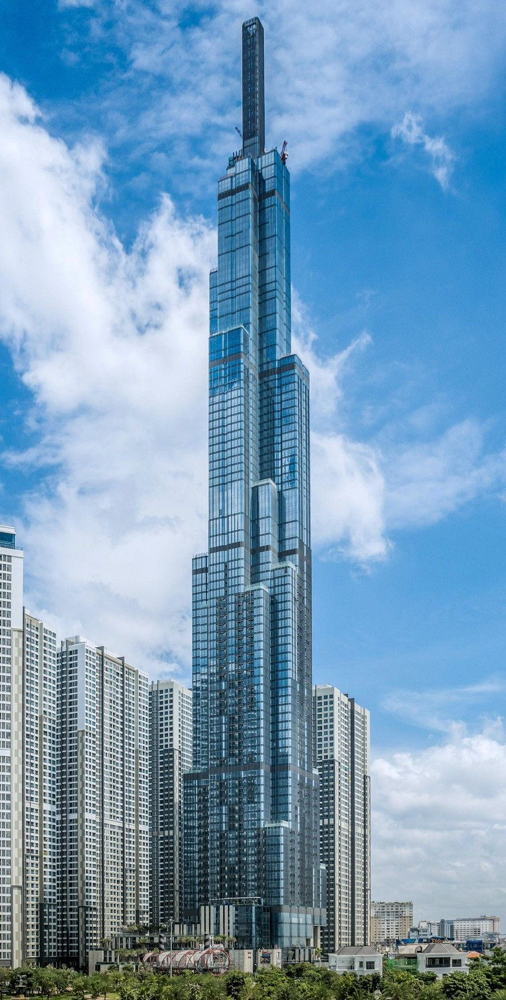

MY MINICLOUD · BLOG KHÁM PHÁ SÀI GÒN
MyMiniCloud
Home
Chào mừng bạn đến với góc nhỏ ghi lại những con hẻm thân quen, món ngon ven đường và nhịp sống rất riêng của Sài Gòn.
Sài Gòn không vội vã, cứ thong thả mà thương.

SAIGONLANDMARK 81 10° 46' N · 106° 42' E